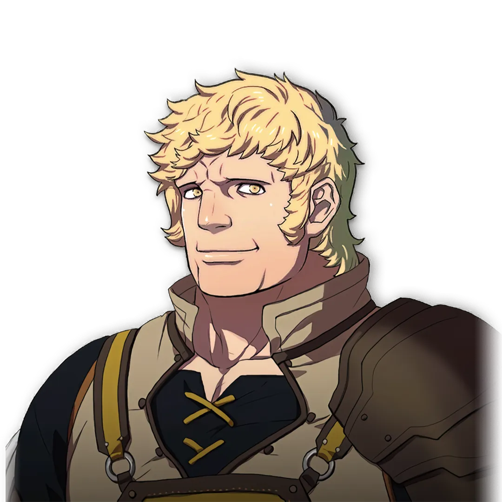

최고의 효율을 위한 캐릭터별 최적화 빌드
전장의 중심을 잡아주는 수수께끼의 용병 출신 사관학교 교사
에델가르트가 이끄는 마법과 도끼 중심의 아드라스타 제국 학과
디미트리가 이끄는 강력한 물리 전위 중심의 퍼거스 신성 왕국 학과
클로드가 이끄는 다재다능한 활과 유틸 중심의 레스터 제후 동맹 학과
율리스가 이끄는 지하 도시 어비스의 개성 넘치는 유격대 학과
강력한 즉시 전력감과 독보적인 보조 유틸을 가진 든든한 조력자들
중급직 '브리건드'를 마스터하면 선공 시 공격력+6을 해주는 [귀신 일격]을 상속받습니다. 모든 물리 딜러(궁수, 격투가, 비행 전사)는 무조건 거쳐 가야 하는 필수 스킬입니다.
중급직 '메이지'를 마스터하면 선공 시 마력+6을 해주는 [마신 일격]을 상속받습니다. 리시테아, 도로테아, 콘스탄체 등 마법으로 딜을 넣는 모든 캐릭의 핵심 원동력입니다.
중급직 '아처'를 마스터하면 조건 없이 명중률을 20이나 상시 올려주는 [명중+20]을 줍니다. 난이도가 높아질수록 적들의 회피가 미쳐 날뛰기 때문에 모든 딜러진에게 매우 귀중합니다.
로렌츠 외전 보상인 [튀르소스의 지팡이](마법 사거리+2)와 율리스 외전 보상인 [별 부여반지](이동력+1, 재이동)는 메인 딜러에게 쥐여주는 순간 게임의 장르가 달라집니다.

전쟁 편 (2부)